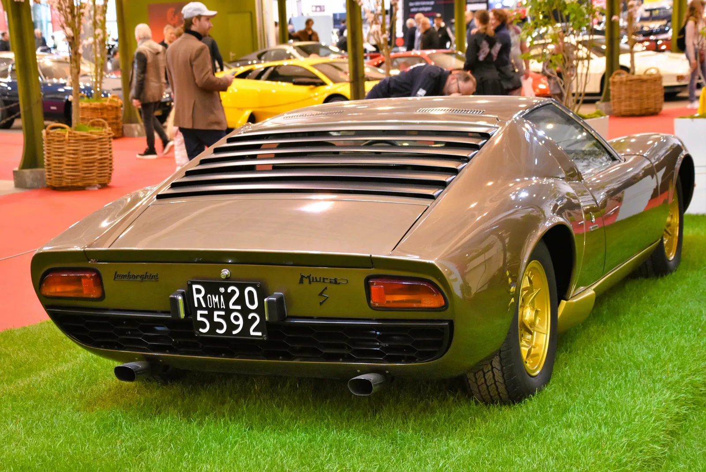

▲ 람보르기니 레부엘토. 미우라 60주년을 기념한 오마주 한정판이 99대만 제작된다 ⓒ 람보르기니
1966년 제네바모터쇼에서 처음 공개된 미우라는 세계 최초의 '슈퍼 스포츠카'로 불린다. 미드십 엔진, 낮고 날렵한 실루엣 등 이후 모든 슈퍼카가 따라간 문법을 미우라가 먼저 썼다. 그로부터 60년이 지난 지금, 람보르기니는 이 유산을 현재의 플래그십 레부엘토에 새겨 넣었다.
1. 1015마력 — 미우라와는 다른 세계의 숫자

▲ 람보르기니 레부엘토. 자연흡기 V12와 하이브리드 시스템을 결합해 1015CV를 낸다 ⓒ 람보르기니
레부엘토는 자연흡기 V12 엔진에 하이브리드 시스템을 더해 합산 최고출력 1015CV, 최대토크 807Nm를 발휘한다. 정지 상태에서 시속 100km까지 도달하는 데 걸리는 시간은 2.5초, 최고속도는 시속 350km를 넘는다. 1966년 미우라의 최고출력이 약 350마력 수준이었던 것과 비교하면, 60년 사이 출력이 3배 가까이 늘어난 셈이다.
2. 색상은 60년 전 그대로 — 9가지 미우라 헤리티지 컬러

▲ 람보르기니 미우라(클래식 모델). 이번 오마주 한정판의 색상은 미우라 시대에서 영감을 받았다 ⓒ Wikimedia Commons
출력과 기술은 현재의 것을 가져왔지만, 색상만큼은 과거를 그대로 소환했다. 아란치오, 비앙코 모노세루스, 블루 노테, 블루 타히티, 지알로, 네로 녹티스, 로쏘 아란치오, 베르데 메탈릭, 베르데 스캔들까지 총 9가지 전용 컬러는 모두 미우라 시대의 색상 팔레트에서 따왔다. 최초의 슈퍼카에 대한 존경을 색으로 표현한 셈이다.
3. 애드 퍼스넘 × 센트로 스틸레 — 99대의 개인화

▲ 람보르기니 레부엘토. 애드 퍼스넘 프로그램을 통해 개인화 사양이 폭넓게 제공된다 ⓒ 람보르기니
이 스페셜 시리즈는 람보르기니의 맞춤 제작 프로그램 애드 퍼스넘(Ad Personam)과 디자인 센터 센트로 스틸레(Centro Stile)의 협업으로 만들어졌다. 99대라는 한정된 생산량 안에서도 고객별 개인화 옵션이 폭넓게 제공되는 것이 특징이다. 벤틀리의 뮬리너, 롤스로이스의 비스포크처럼, 슈퍼카 브랜드들도 '한정판 안에서의 개인화'를 핵심 상품성으로 내세우는 흐름이 이어지고 있다.
4. 왜 하필 미우라인가

▲ 람보르기니 미우라 P400 S(클래식 모델, 자료사진). 1966년 등장한 미우라는 미드십 레이아웃을 앞세운 세계 최초의 슈퍼 스포츠카로 평가받는다 ⓒ Wikimedia Commons
람보르기니에게 미우라는 단순한 옛 모델이 아니라 브랜드 정체성의 출발점이다. 트랙터 제조사로 출발한 람보르기니를 슈퍼카 브랜드로 각인시킨 것이 바로 미우라였다. 60주년이라는 상징적인 시점에, 현재 브랜드를 대표하는 플래그십 하이브리드 하이퍼카 레부엘토에 그 헤리티지를 입힌 것은 자연스러운 선택이라는 평가가 나온다.
5. 정리
체크포인트
- 레부엘토 미우라 60° 오마주는 전 세계 99대 한정 생산된다.
- 합산 출력 1015CV, 시속 100km 가속 2.5초의 성능을 갖췄다.
- 색상은 미우라 시대의 9가지 컬러를 그대로 재현했다.
- 애드 퍼스넘·센트로 스틸레 협업으로 개인화 옵션도 폭넓게 제공된다.